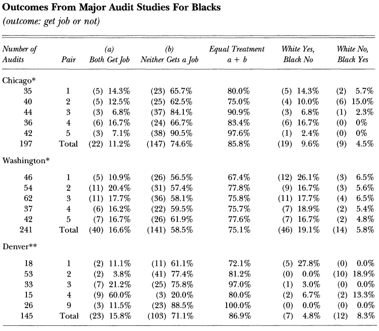
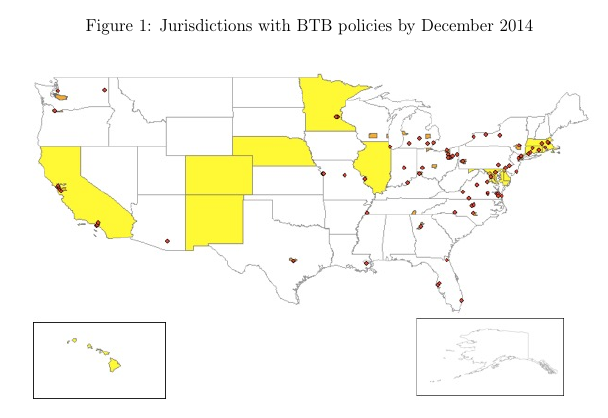
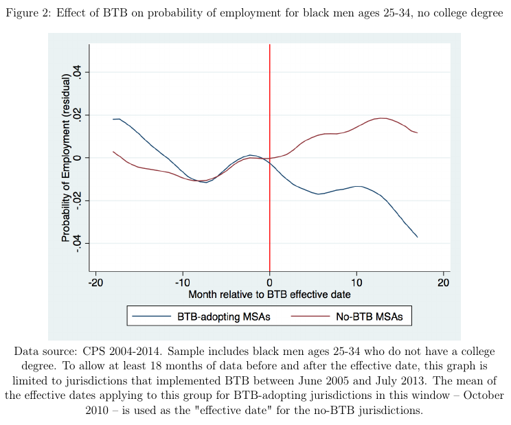
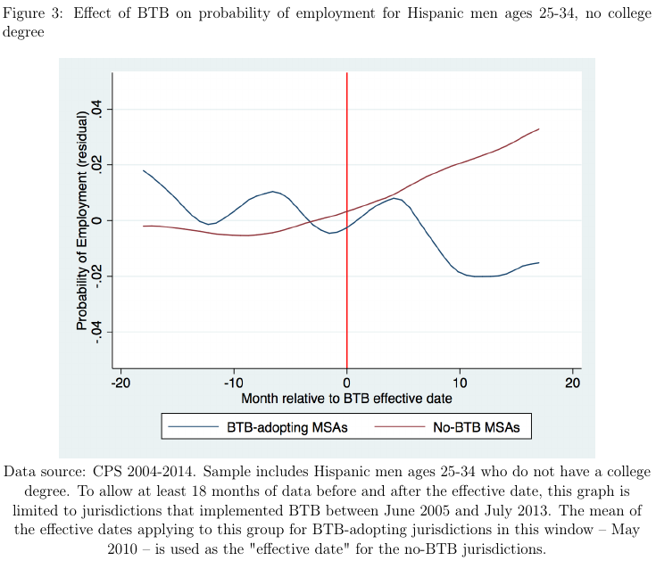
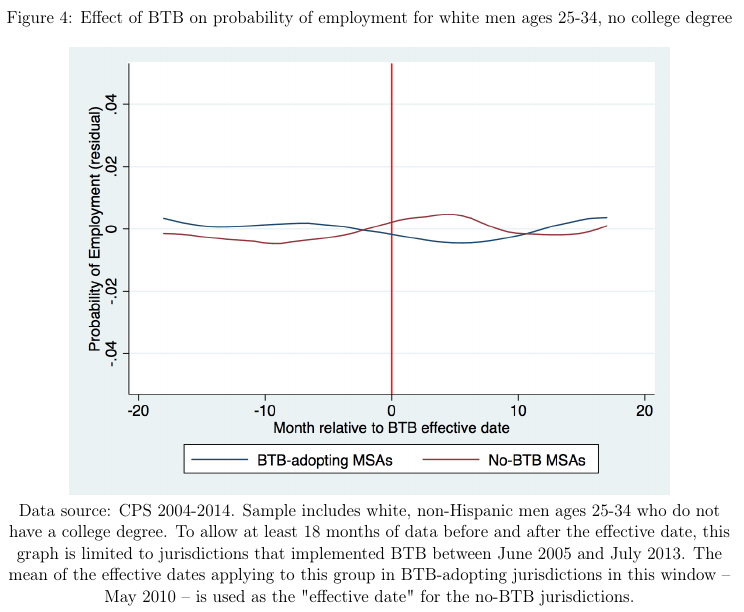
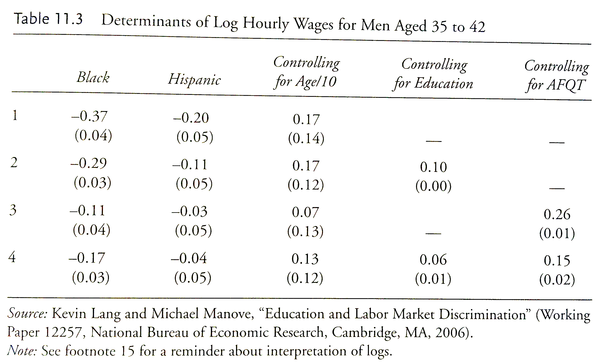

James Heckman:
Only a zealot can see evidence in these data of pervasive discrimination in the U.S. labor market.
While undoubtedly there are still employers and employees with discriminatory intentions, labor market discrimination is no longer a first-order quantitative problem in American society. At this time, the goal of achieving black economic progress is better served by policies that promote skill formation, like improving family environments, schools and neighborhoods, not by strengthening the content and enforcement of civil rights laws–the solution to the problem of an earlier era.




